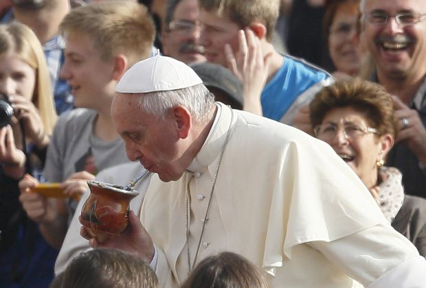
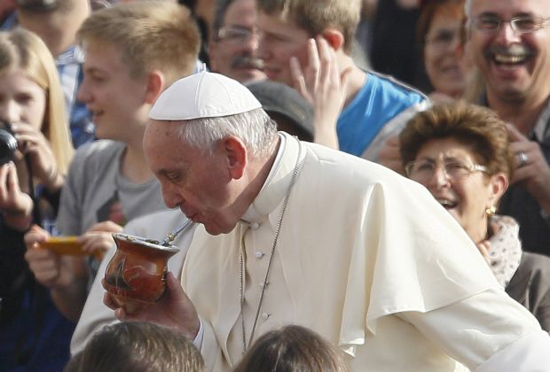
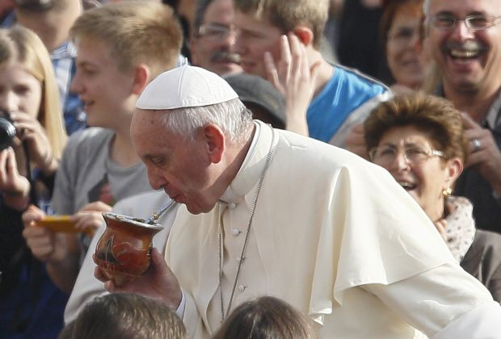

Mate is a traditional South American drink from Chile, Argentina, and Uruguay, Paraguay and Brazil. To be more specific the "mate" is the cup used to drinking the "yerba" or herbal drink within. The primary ingredient are the leaves of the llex paraguariensis plant which are finely chopped and sometimes mixed with wood chips to absorb the water and special flavorings. These flavors could be from a fruit, or honey, or mint. The most common materials for the mate cup are wood, ceramic, and gourd. The herbal drink is consumed through a straw, or "bombilla" in Spanish, which separates the flavored water from the the herbs. The straw is generally made of aluminum or stainless steel.
Mate was primarily consumed from the Guarani, an indigenous group from ancient Paraguay, in the 16th century. From there it became a popular beverage among the European Colonizers. In the 17th century is spread to the Argentine "Rio de La Plata" and then to Chile.

Mate is more than just a popular South American drink, it is part of their culture. When I was living in Chile I met many families that would drink mate among friends and at social gatherings. I found drinking mate to be a great way of strengthening relationships and making new friends. Usually, instead of everyone having their own mate cup, one or two cups are shared with everyone in the party. They are passed around the group, each person taking a few sips and passing it on. When the hot water has all been drank large thermos are used to refill the mate and the yerba is newly infused with rich flavor.
I am a Mate Fanatic. The mate culture I experienced for two years has become a part of me and I find it's rich flavor pulling me in. I drink while studying, while watching movies, and reading. My favorite brand is Cruz de Malta, followed by Taragui and then CBSe. CBSe comes in a variety of different flavors and combinations but I prefer the authentic, unadulterated taste.